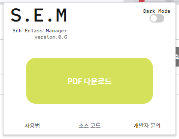
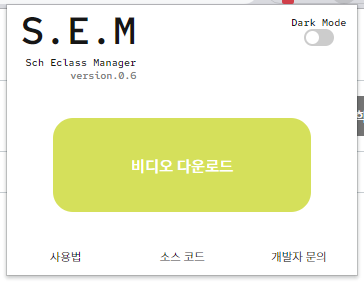

공지사항
- 저작권법 제30조(사적이용을 위한 복제) 공표된 저작물을 영리를 목적으로 하지 아니하고 개인적으로 이용하거나 가정 및 이에 준하는 한정된 범위 안에서 이용하는 경우에는 그 이용자는 이를 복제할 수 있다. 다만, 공중의 사용에 제공하기 위하여 설치된 복사기기에 의한 복제는 그러하지 아니하다.
에 따라 해당 프로그램은 법적으로 문제가 없으나 강의를 무단 도용, 배포, 판매 시 저작권법에 걸리므로 무조건 개인 공부용으로만 소장하시길 바랍니다. - 해당 프로그램은 사용자의 어떠한 정보도 수집하지 않습니다.
- 해당 프로그램은 이클래스 사이트의 정보를 기반으로 움직입니다.
- 이클래스 사이트, 학교 측에서 변경이 있을 경우 프로그램 사용이 어려울 수도 있습니다.
- 기타 문의 사항은 poinguinie@gmail 로 문의주시길 바랍니다.
사용법
1. PDF 다운로드
PDF가 있는 페이지로 이동합니다.
PDF 다운로드 버튼을 클릭시 PDF가 다운로드 됩니다.

2. 녹화 영상 다운로드
녹화 영상이 있는 페이지로 이동합니다.
비디오 다운로드 버튼을 클릭하면 영상 다운로드가 시작됩니다.

릴리즈 노트
ver.1.0.0
정식 배포가 시작되었습니다.
많은 이용 부탁드립니다.
ver.1.0.1
비디오 다운로드 버튼이 나타나지 않는 버그를 수정하였습니다.
ver.1.0.2
분할화면 지원 영상이 다운로드가 되지 않던 버그를 수정하였습니다.
ver.1.0.3
분할화면 지원 영상이 다운로드가 되지 않던 버그를 재수정하였습니다.
ver.1.0.4
ver.1.0.5
Zoom 아이콘 호환
ver.1.0.6
버전 Crawling 자동화
ver.1.0.6.1
버전 Crawling 자동화
Jquery 인식 오류로 백업
ver.1.0.6.2
버전 Crawling 자동화
Jquery 인식 오류로 백업
-> fetch 메서드 사용
ver.1.0.6.3
버전 Crawling 자동화
인라인 스크립트 인식 에러 수정